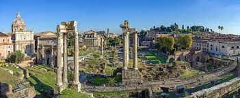
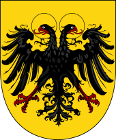

Дре́вний Рим — одна из самых развитых цивилизаций Древнего мира, государство Античности, получила своё название по главному городу (Roma — Рим), в свою очередь названному в честь легендарного основателя — Ромула. Центр Рима сложился в пределах болотистой равнины, ограниченной Капитолием, Палатином и Квириналом. Определённое влияние на становление древнеримской цивилизации оказали культуры этрусков и древних греков. Пика своего могущества Древний Рим достиг во II веке н. э., когда под его контролем оказалось пространство от современной Англии на севере до Судана на юге и от Ирака на востоке до Португалии на западе.
Неофициальным символом — гербом империи был Золотой орёл (aquila), после принятия христианства появились лабарумы (знамя, установленное императором Константином для своих войск) с хризмой (монограмма Иисуса Христа — скрещённые буквы Хи и Ро). Религия в Древнем Риме в течение большей части периода существования была политеистична. Христианство как религия зародилось на территории оккупированной Римской империей Палестины.
